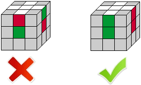

Kako sloziti Rubikovu kocku
Mehanizam kocke

Rubikova kocka zapravo je slagalica od 26 komada. Postoje tri vrste dijelova: (pogledajte sliku) Ugaoni komad: na njemu se nalaze tri razlicite naljepnice u boji (u kocki ima 8 kutaka) Rubni dio: na njemu se nalaze dvije naljepnice u boji (u kocki ima 12 ruba) Središnji dio: ima jednu naljepnicu u boji (6 središnjih dijelova, svi su pricvršceni na jezgru) Jezgra je unutar Rubikove kocke, koja drži sve dijelove zajedno i pricvršcena na središnje dijelove rotirajucim osima. Važno! Središnji dijelovi su dio jezgre i kasnije se ne mogu pomaknuti relativno jedan prema drugome. Zbog toga su vec "riješeni". Proces rješavanja zapravo dovodi sve kutne i rubne dijelove do "vec riješenih" središnjih dijelova (što znaci da je od 26 riješeno samo 20 komada). Na primjer, plavi središnji dio uvijek ce biti nasuprot zelenom središnjem dijelu (na standardnoj kocki sheme boja). Nije bitno koliko cete se truditi da probate kocku, samo ce tako ostati.
Oznake stranica kocke
Koraci:
- Sloziti bijeli kriz
- Sloziti prvi sloj
- Sloziti drugi sloj
- Orijentiraj rubne kockice na zadnjem sloju
- Permutiraj kutne kockice na zadnjem sloju
- Orijentiraj kutne kockice na zadnjem sloju
- Permutiraj rubne kockice na zadnjem sloju
1. Sloziti bijeli kriz
 U ovom koraku moramo riješiti cetiri dijela. Najprije odaberite boju za pocetak. Odabrao sam bijelu boju u ovom vodicu. Za to vrijeme odaberite i bijelu boju, tako da ce slike uz rješenje biti relevantne za vaš proces rješavanja. Osim toga, najbolje je poceti s bijelim / žutim bojama jer su to najlakše boje za brzo prepoznavanje koje je važno za brzu obradu.
U ovom koraku moramo riješiti cetiri dijela. Najprije odaberite boju za pocetak. Odabrao sam bijelu boju u ovom vodicu. Za to vrijeme odaberite i bijelu boju, tako da ce slike uz rješenje biti relevantne za vaš proces rješavanja. Osim toga, najbolje je poceti s bijelim / žutim bojama jer su to najlakše boje za brzo prepoznavanje koje je važno za brzu obradu.

Buduci da se središnji dijelovi ne mogu pomicati medusobno relativno je važno pravilno riješiti rubne dijelove u odnosu jedan na drugi. Primjerice, kod rješavanja bijele boje u našem slucaju - zeleni središnji dio nalazi se lijevo od crvenog središnjeg komada, stoga zeleno-bijeli rubni komad treba riješiti lijevo od crveno-bijelog ruba (vidi sliku) , Zapamtiti! Donesite bijele rubne dijelove u bijelo središte, a ne bijelo središte do ruba.